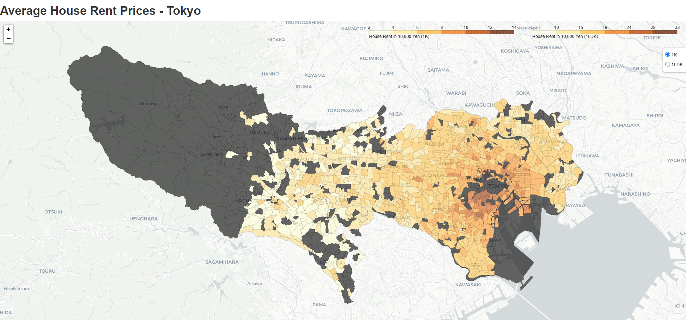
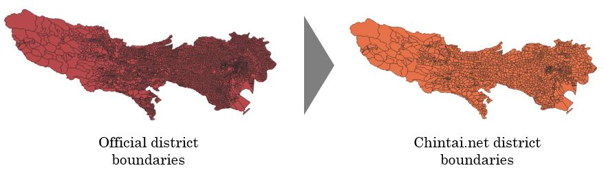

This was a small data extraction, processing, and visualization work I did over a weekend. I use the beautifulsoup library to extract data from a major Japanese real estate portal, then I do some geoprocessing using QGIS. I load the data back to Python and use the folium library to build an interactive map of Tokyo that shows areas of high and low average rent prices. See a preview of the result below:

Webscraping: I used the beautifulsoup and the requests library in Python to scrape city, district, district code, and the average rent prices for the 5 main types of apartment available in the Japanese real estate market (1R, 1K, 1LDK, 2LDK, 3LDK). The code first extracts a list of available Tokyo districts and then loops through each of the districts urls to grab rent data.
Geoprocessing: I realized that the districts scraped from chintai.com were not exactly the official district boundaries as defined by the Japanese government. Official boundaries were much smaller, so I had to group in ("Dissolve" in GIS jargon) some of these districts based on a less granular criteria to be able to merge it with the rent data. See an illustration of what I mean below:

Web Mapping: The final step is to merge the geoprocessed data with the rent data and build a choropleth map using the folium library in Python. The map allows the user to choose from 1K and 1LDK flat types. I could have set it show other types, but the map was getting quite heavy and there were lots of missing data for flats bigger than 1LDK. The map works well and highlights with clarity areas of Tokyo where rents are high / low. Check the web map here.
The map shows the expensive areas that I expected to find. The brown area covers Minato, Shibuya, and portions of Meguro which are indeed more expensive areas to live. Minami-Aoyama, Akasaka, and Roppongi stands out with a strong brown color! These are the areas known to be home of TV celebrities, diplomats, and CEOs of multinational companies.
It would be nice to see a time series version of this map showing how areas that were yellow became brown over time (or vice-versa). Alternatively, it can be argued that Tokyo is an area where residential development has achieved its full potential a while ago, so a similar map showing changes in rent prices of neighboring prefectures could be more interesting (development has indeed been going on at fast pace in Chiba and Ibaraki). Unfortunately, that is not possible with the data I have at the moment.
This project helped me refresh basic webscraping techniques and work with folium - a Python library for web mapping. I usually build maps using Tableau. I also use QGIS when I need more advanced maps. In this project, I was able to explore folium and get a better understanding of it.